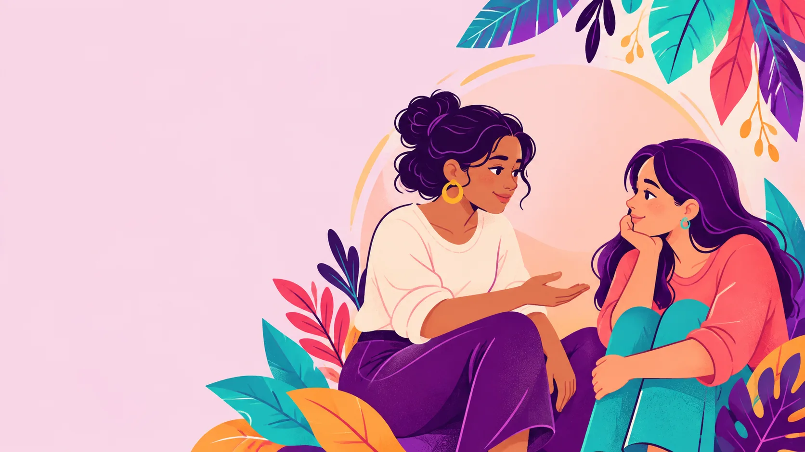
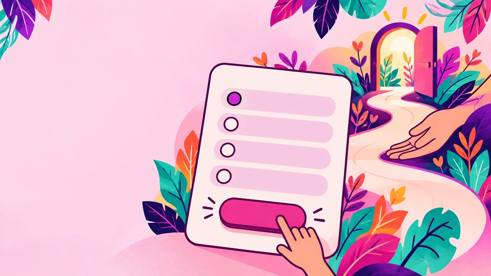

Control y aislamiento
Revisar, vigilar, decidir con quién puedes hablar o dificultar tus redes de apoyo puede ser una señal para tomar en serio.
Patrones Hermosos · Equipo 31 · reconstrucción 2026
Un espacio educativo para pensar en el trato que mereces, identificar señales de control o violencia y conocer recursos de apoyo.

Si hay peligro inmediato
En México llama al 911. Para orientación por violencia de género, 079, opción 1. En Guatemala, la línea para mujeres víctimas de violencia es 1572.
Más recursosHerramienta educativa
¿Hay algo en una relación personal que te incomoda, te preocupa o no sabes cómo nombrar? Este espacio puede ayudarte a ponerlo en palabras. No es un test, diagnóstico ni sustituto de atención médica, psicológica, legal o de emergencia.

A tu ritmo
Son seis preguntas breves. Desde la primera conducta que te incomode puedes buscar orientación; no necesitas esperar a que la situación empeore. Puedes omitir, detenerte o consultar los recursos cuando quieras.
Comenzar las preguntasPara nombrar lo que pasa
Las experiencias no son iguales ni siguen una secuencia. Estas categorías sirven para conversar y buscar información, no para etiquetar una vivencia.
Revisar, vigilar, decidir con quién puedes hablar o dificultar tus redes de apoyo puede ser una señal para tomar en serio.
Las amenazas, presiones o el miedo no son formas sanas de llegar a acuerdos.
Compartir contenido íntimo sin consentimiento, controlar contraseñas o vigilar cuentas también puede causar daño.
Un acuerdo debe ser libre, claro y reversible. Nadie te debe presionar para aceptarlo.
Contexto con fecha
Las estadísticas describen periodos y métodos específicos; no predicen lo que le ocurrirá a una persona.
México · histórico
2021
Encuesta nacional sobre las experiencias de violencia de mujeres de 15 años y más, levantada entre octubre y noviembre de 2021.
Consultar metodología en INEGI ↗Guatemala · histórico
48.8%
Porcentaje de mujeres que reportó al menos un incidente de violencia a lo largo de su vida, según los resultados publicados por INE Guatemala.
Consultar resultados en INE Guatemala ↗Acompañamiento
Estos recursos fueron verificados el 26 de octubre de 2026. Si es seguro para ti, puedes contactarles. Ante peligro inmediato, llama a emergencias.
México · vigente
911
Número único de emergencias. Úsalo cuando hay riesgo inmediato.
Fuente oficial ↗México · vigente
079 opción 1
Orientación y auxilio de primer contacto, gratuita y confidencial, las 24 horas.
Fuente oficial ↗Guatemala · vigente
1572
Línea exclusiva del Ministerio Público para atención de mujeres víctimas de violencia.
Fuente oficial ↗Salida rápida: el botón morado flotante abre otra página, pero no borra el historial del navegador. Si alguien puede revisar tu dispositivo, considera usar un equipo o red de confianza cuando sea posible.
Trazabilidad
Solo se muestran afirmaciones con fuente y estado de revisión. Los contenidos educativos se revisan por separado de los servicios de apoyo.